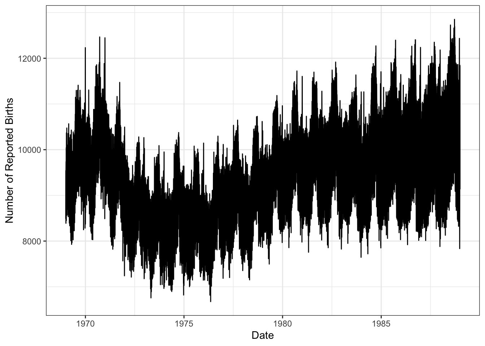
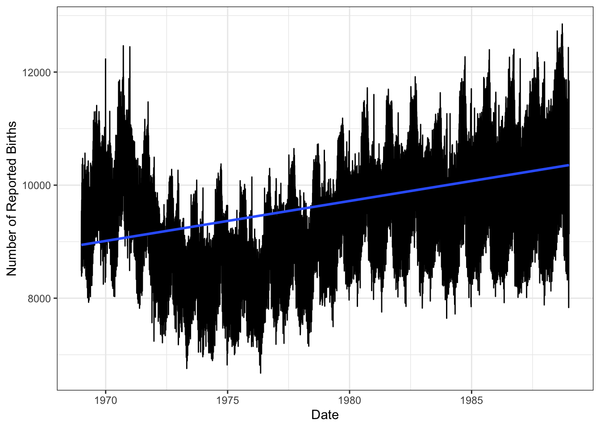
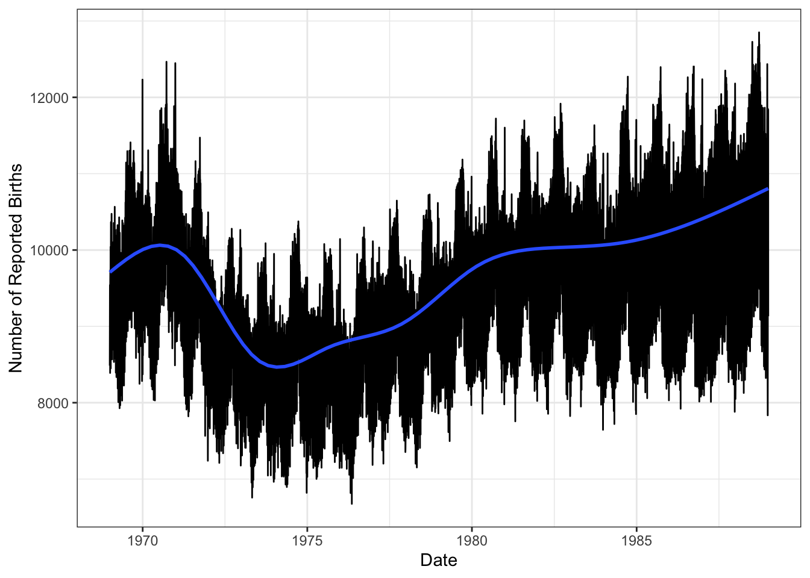
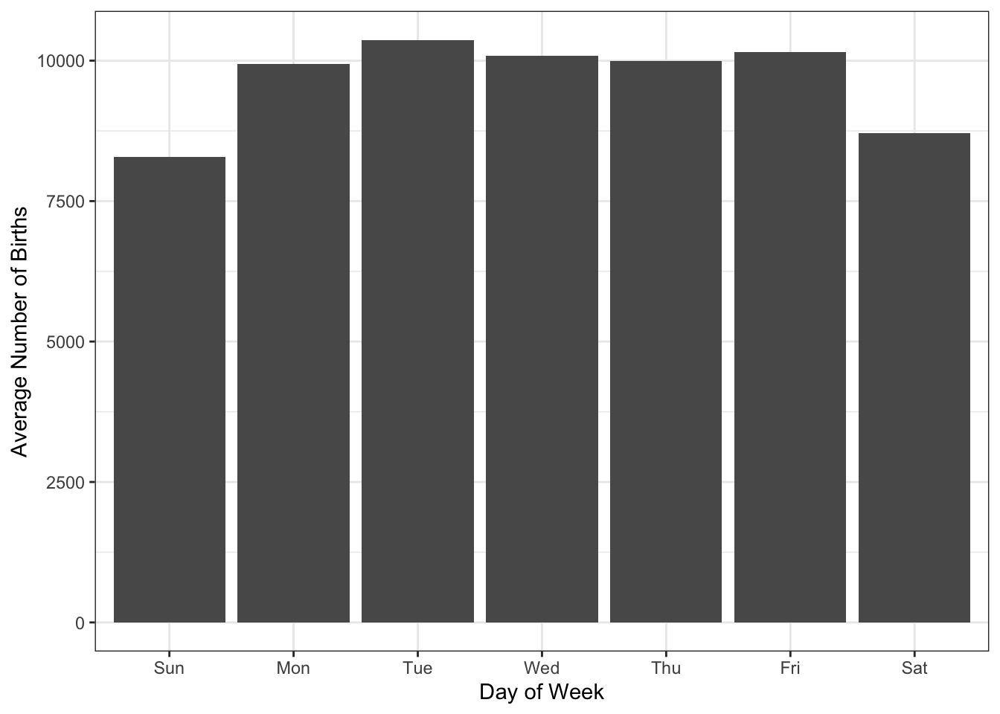
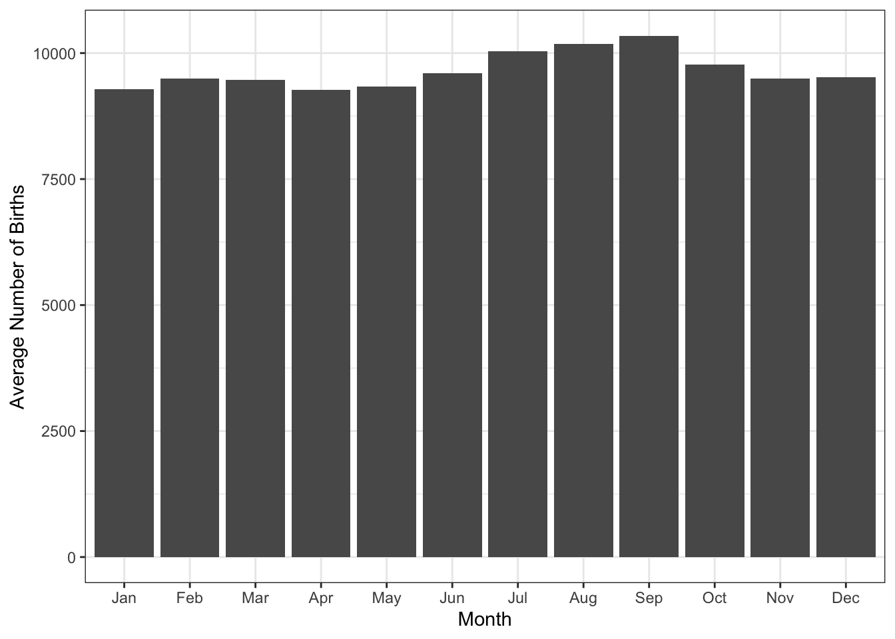
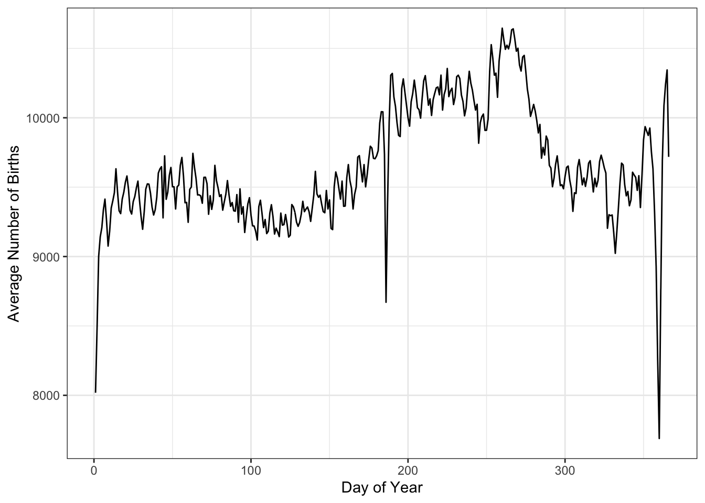
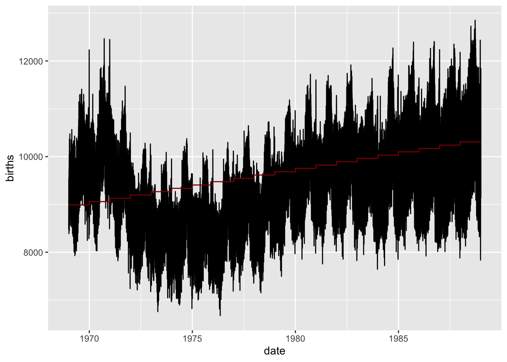

births <- read_csv("https://michael-weylandt.com/STAT3106/data/births.csv")Notes for Lecture #12: Unit II. Regression: Applied High-Dimensional Regression
Outline:
- Review of Regression
- What is regression?
- Loss Functions
- Regularization
- Why?
- Ridge
- Most explicit BV gambit
- Helps with collinearity
- Prediction focused
- Everywhere in ML
- Lasso
- Sparsity
- Interpretation more than conviction
- Tractable alternative to best subsets
- When does it get ‘the right answer’?
- Applications to EE
- Non-Linear Methods
- Why not just high-order polynomials?
- Lots of little models
- Local polynomials
- Splines
- Additive Models
Our goal today is to review everything we have discussed to date about regression. After a brief run of the conceptual issues listed above, I’ll open the floor for questions and then start working through some examples. Let’s start with a relatively simple data set:
births <- read_csv("data/births.csv")This is a relatively simple data set, where the variable of interest is the number of children born (or at least reported to the SSA) in the US every day from the beginning of 1969 to the end of 1988, for a total of 7305 days. To make the analysis a bit easier, I have separated year, month, day into variables, as well as setting up different “day of week” and “day of year” variables.
skimr::skim(births)| Name | births |
| Number of rows | 7305 |
| Number of columns | 7 |
| _______________________ | |
| Column type frequency: | |
| numeric | 7 |
| ________________________ | |
| Group variables | None |
Variable type: numeric
| skim_variable | n_missing | complete_rate | mean | sd | p0 | p25 | p50 | p75 | p100 | hist |
|---|---|---|---|---|---|---|---|---|---|---|
| year | 0 | 1 | 1978.50 | 5.77 | 1969 | 1974 | 1979 | 1984 | 1988 | ▇▇▇▇▇ |
| month | 0 | 1 | 6.52 | 3.45 | 1 | 4 | 7 | 10 | 12 | ▇▅▅▅▇ |
| day | 0 | 1 | 15.73 | 8.80 | 1 | 8 | 16 | 23 | 31 | ▇▇▇▇▆ |
| births | 0 | 1 | 9648.94 | 1127.32 | 6675 | 8792 | 9622 | 10510 | 12851 | ▂▇▇▆▁ |
| day_of_year | 0 | 1 | 183.75 | 105.62 | 1 | 93 | 184 | 275 | 366 | ▇▇▇▇▇ |
| day_of_week | 0 | 1 | 4.00 | 2.00 | 1 | 2 | 4 | 6 | 7 | ▇▅▅▅▇ |
| id | 0 | 1 | 3653.00 | 2108.92 | 1 | 1827 | 3653 | 5479 | 7305 | ▇▇▇▇▇ |
Before we get to modeling, let’s do some visual EDA:
births |>
mutate(date = make_date(year, month, day)) |>
ggplot(aes(x=date, y=births)) +
geom_line() +
scale_x_date() +
xlab("Date") +
ylab("Number of Reported Births") +
theme_bw()
We immediately see that the time (date) effect isn’t linear but there is nevertheless an upwards trend that a linear model might capture:
births |>
mutate(date = make_date(year, month, day)) |>
ggplot(aes(x=date, y=births)) +
geom_line() +
scale_x_date() +
xlab("Date") +
ylab("Number of Reported Births") +
theme_bw() +
stat_smooth(method="lm",
se=FALSE)`geom_smooth()` using formula = 'y ~ x'
Not great, but about as good as we might expect. If we use ggplot2’s default gam smoother, we definitely see a better fit.
births |>
mutate(date = make_date(year, month, day)) |>
ggplot(aes(x=date, y=births)) +
geom_line() +
scale_x_date() +
xlab("Date") +
ylab("Number of Reported Births") +
theme_bw() +
stat_smooth(se=FALSE)`geom_smooth()` using method = 'gam' and formula = 'y ~ s(x, bs = "cs")'
We see here the end of the baby boom, a small decrease, and then a smoother rise as the US population grew (more people, more parents, more babies).
The regular ‘jagged’ patterns to this data suggest we might want to look at a day of year effect and a day of week effect:
births |>
mutate(date = make_date(year, month, day),
wday = wday(date, label=TRUE)) |>
group_by(wday) |>
summarize(births = mean(births)) |>
ggplot(aes(x=wday, y=births)) +
geom_col() +
theme_bw() +
xlab("Day of Week") +
ylab("Average Number of Births")
Similarly,
births |>
mutate(date = make_date(year, month, day),
month_name = month(date, label=TRUE)) |>
group_by(month_name) |>
summarize(births = mean(births)) |>
ggplot(aes(x=month_name, y=births)) +
geom_col() +
theme_bw() +
xlab("Month") +
ylab("Average Number of Births")
If we plot by day of year, we see a hint of some holiday effects:
births |>
group_by(day_of_year) |>
summarize(births = mean(births)) |>
ggplot(aes(x=day_of_year, y=births)) +
geom_line() +
theme_bw() +
xlab("Day of Year") +
ylab("Average Number of Births")
Though day of year will not be a perfect proxy due to certain moving holidays and leap year effects.
That’s pretty much all the structure we can get from this data set, so let’s start modeling it. As seen above, we see several non-linear effects, so let’s break out our non-linear toolkit, additive models from mgcv.
Family: gaussian
Link function: identity
Formula:
births ~ year
Total model degrees of freedom 2
GCV score: 1110958 By default, a GAM is just a linear model, so we get the simple fit we saw before:

(Test yourself: why is this ‘step pattern’ an artifact? How might we avoid it?)
More in class